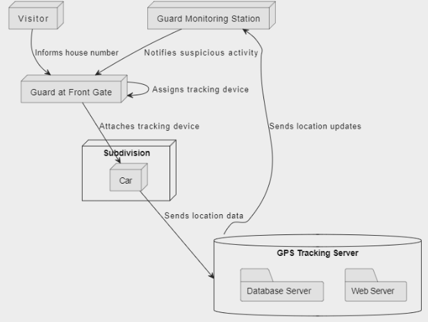
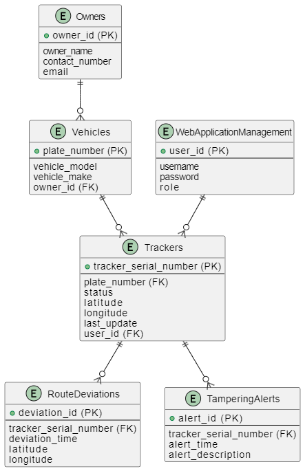

Rationale
The development of "Private Community Security System: Car Visitor Tracking using GIS and GPS" highlights a focused approach to enhancing security in residential areas by monitoring vehicle entries. Integration of GIS and GPS technologies enables precise mapping and real-time tracking of vehicles, enhancing situational awareness and data-driven insights for efficient incident management. Additional functionalities include Real-Time Vehicle Tracking, Owner and Tracker Association, Tracker Configuration and Status, Route Deviation Alerts, Tampering Alerts, and Web Application Management, ensuring comprehensive security measures. By offering a sophisticated system for monitoring vehicular entries and providing real-time alerts and management features, the solution aims to bolster resident peace of mind and overall community safety. Overall, the title effectively communicates the purpose, scope, and technological foundation of the proposed security solution, making it clear, specific, and relevant for stakeholders invested in enhancing community security through innovative technology.
Objectives
The developer aims to design and develop a Private Community Security System: Car Visitor Tracking using GIS and GPS Specifically, this study aims to accomplish the following objectives:
1. Real-Time Vehicle Tracking;
2. Owner and Tracker Association;
3. Tracker Configuration and Status;
4. Route Deviation Alerts;
5. Tampering Alerts;
6. Web Application Management.
Database Architecture
Entity Relationship Diagram
Queries
Owner and Vehicle
DB-Fiddle / SQL Fiddle Link
Click here to visit DB Fiddle.
Team Members
Krystal Rose Rizardo
Jeremiah Sim
Mechelle Simpron
Nash Julian Cabalfin